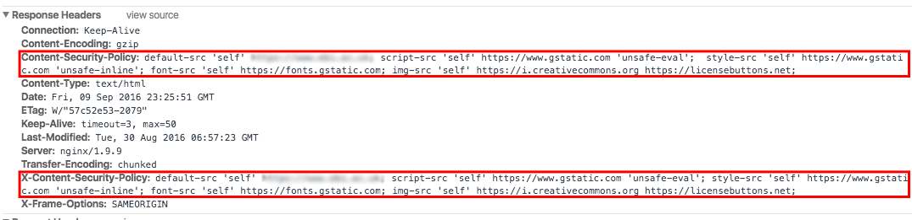

サービスのサーバ設定・管理
HTML＋CSS＋JavaScriptのコーディング
・・・などをやっています。
というようなWebサービスのセキュリティについて、実際にやったことをお話します。
また、Content Security Policyの仕様について気になっていた点を整理しました。
HTTPヘッダにX-Frame-Options:SAMEORIGINを追加
外部のサイトから、自サイトのコンテンツをiframeで読み込みことができなくなります。
参考：https://developer.mozilla.org/ja/docs/Web/HTTP/X-Frame-Options
現在この仕様を策定しているのはIETFでRFC7034として公開されています。
Content security policyとの併用が好ましいとされており、さらに将来的にはCSPに内包される予定のようです。
JavaScript、CSS、画像、フォント等(*)のコンテンツの外部からの読み込みを制御することができます。
例：
default-src 'self';
script-src 'self' 'unsafe-eval';
style-src 'self' 'unsafe-inline';
font-src 'self' https://fonts.gstatic.com;
img-src 'self' https://i.creativecommons.org https://licensebuttons.net;
*オーディオやビデオなども含まれます。
設定すると、HTTPヘッダーに以下のように追加されます：

Internet Explorer(10, 11)は、CSPに対応していないので、代わりにX-Content-Security-Policyを使用します。
仕様にはほぼ互換性があるので、同じ指定を2回書くことになります。
CSPはW3Cで仕様策定が行われています。
Level 1から追加された主な仕様：
「unsafe-eval」、「unsafe-inline」はどちらも、XSSの可能性があるので注意、となっています。
現実
結果として、けっこう長いコードができあがり、果たしてこれで安全なのかと不安になります。
Googleのエンジニアチームが2016年に発表した論文より：
簡潔にまとめるとCSP Lv2からのnonce-hashとCSP Lv3からの「strict-dynamic」の指定が有効
※個人的見解です